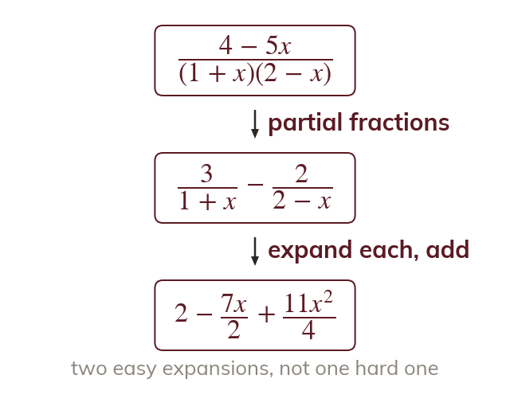
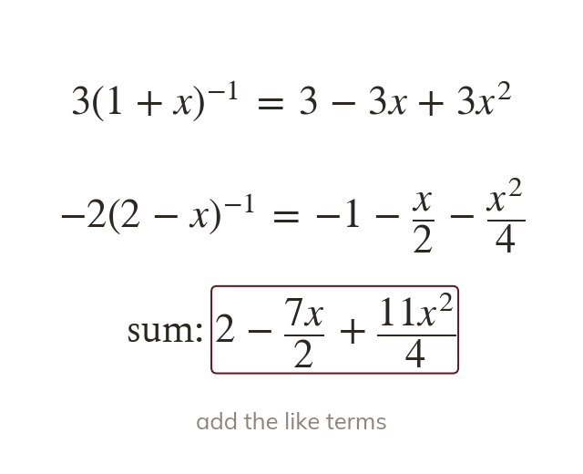
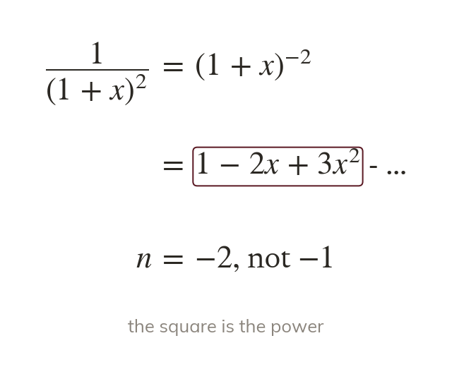
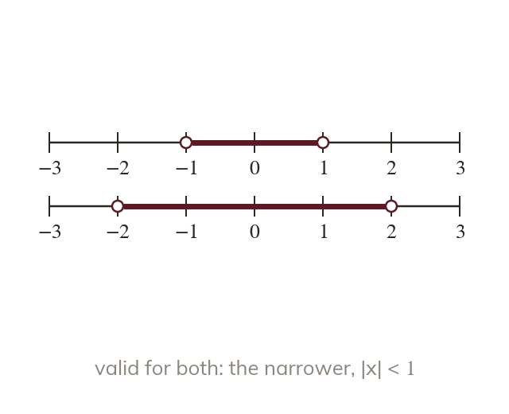
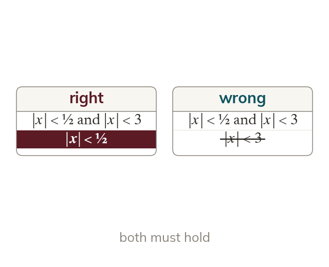
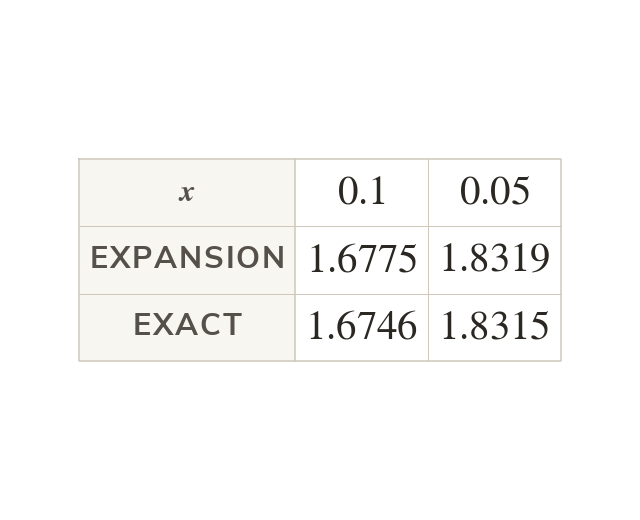

Split, then expand
A fraction with two linear factors below splits into two simpler fractions. Each one is a bracket to the power so expand each and add.
A fraction such as cannot be expanded as it stands, but its partial fractions from are binomials that can. This closes the chapter, and splitting into partial fractions before working on each part comes back when integrating in Pure Year chapter
Work down the page at your own pace. Write every answer in your book first, then click to check it.
Read each card, then follow the worked examples one step at a time.

A fraction with two linear factors below splits into two simpler fractions. Each one is a bracket to the power so expand each and add.

Write each partial fraction as a constant times a bracket to the power
Take out where the bracket does not start with as in

A squared factor gives a partial fraction such as
It is expanded as with power not
Pick an answer. If it's wrong, the feedback tells you which mistake it was.
Write the blanks in your book first, then tap each one to check.
Read each card, then follow the worked examples one step at a time.

is valid for and for
Both expansions must converge, so the sum is valid only where both are.

The combined range is the narrower of the two, never the wider and never the values between. For it is < ½.

Substitute a small x inside the range to approximate the fraction. The smaller the x, the closer the three terms come to the exact value.
Pick an answer. If it's wrong, the feedback tells you which mistake it was.
Write the blanks in your book first, then tap each one to check.
For each skill, tap the one that is true for you today. Your Revise pages start with anything you mark Not yet.
Your ratings are saved on this device only.
Log in, then search for a code to practise that skill.